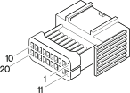

D2A Front / crossmember coupling ( CROSSMEMBER )
- Path
- Electrical equipment > Connectors > D Intermediate couplings > D2 Front / crossmember coupling > D2A Front / crossmember coupling ( CROSSMEMBER )
- Kind
- connector pinout (pin -> wire colour -> other end)
- Applies to
- engines: 2.5 V6, 3.2 V6, 1.9 JTD 8v , 2.4 JTD 10v; production: da 03/02 a 09/03, da 10/03
- Interactive page
- https://sloeber94.github.io/elrnDB-a156/en/#/3235497
Applies to: engines: 2.5 V6, 3.2 V6, 1.9 JTD 8v , 2.4 JTD 10v; production: da 03/02 a 09/03, da 10/03

Wiring | Colour |
|---|---|
NERO (black) |
Pin | Cable | Destination | |||
|---|---|---|---|---|---|
Sec.. | Colour | Nodo | Connect. | Pin | |
M (brown) | |||||
RV (red with green stripe) | |||||
LN (blue with black stripe) | |||||
LR (blue with red stripe) | |||||
AB (light blue with white stripe) | |||||
BV (white with green stripe) | |||||
H (grey) | |||||
HB (grey with white stripe) | |||||
G (yellow) | |||||
AR (light blue with red stripe) | |||||
HR (grey with red stripe) | |||||